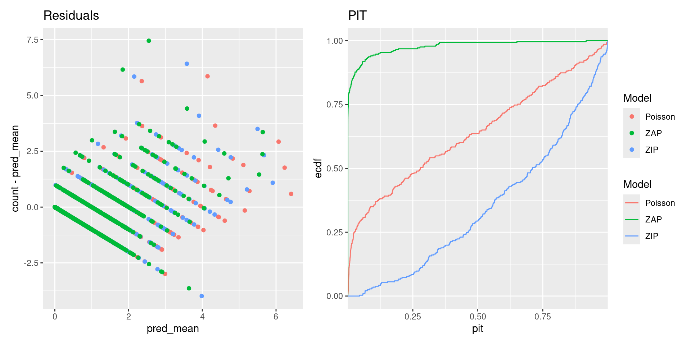
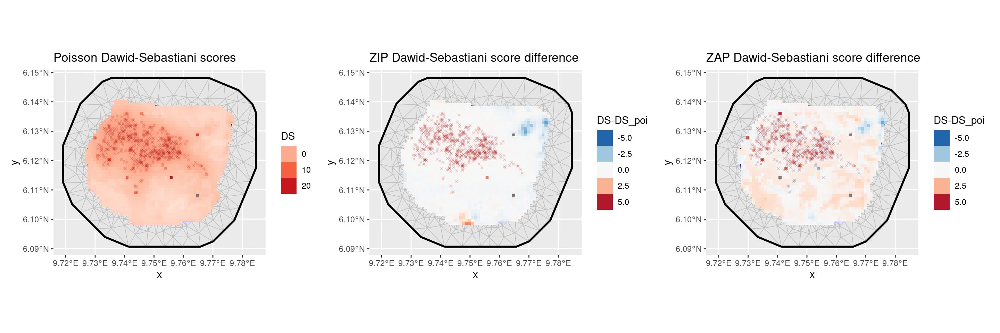

ZIP and ZAP models
Dmytro Perepolkin and Finn Lindgren
Source:vignettes/articles/zip_zap_models.Rmd
zip_zap_models.Rmd(Vignette under construction!)
library(dplyr)
library(ggplot2)
library(inlabru)
library(terra)
library(sf)
library(RColorBrewer)
library(magrittr)
library(patchwork)
# We want to obtain CPO data from the estimations
bru_options_set(control.compute = list(cpo = TRUE))Count model
In addition to the point process models, inlabru is
capable of handling models with positive integer responses, such as
abundance models where species counts are recorded at each observed
location. Count models can be considered as coarse aggregations of point
process models.
The following example utilizes the gorillas dataset. To
obtain the count data, we rasterize the species counts to match the
spatial covariates available for the ‘gorilla’ data, and then aggregate
the pixels to cover an area 16 times larger (4x4 pixels in the original
covariate raster dimensions). Finally, we mask regions outside the study
area.
gorillas_sf <- inlabru::gorillas_sf
nests <- gorillas_sf$nests
mesh <- gorillas_sf$mesh
boundary <- gorillas_sf$boundary
gcov <- gorillas_sf_gcov()
counts_rstr <- terra::rasterize(vect(nests), gcov, fun = sum, background = 0) %>%
terra::aggregate(fact = 4, fun = sum) %>%
mask(vect(boundary))
plot(counts_rstr)Counts of gorilla nests
We now need to extract the coordinates for these pixels. The plot below illustrates the pixel locations for all pixels with non-zero counts. We create a mesh over the study area and define a prior for it.
counts_df <- crds(counts_rstr, df = TRUE, na.rm = TRUE) %>%
bind_cols(values(counts_rstr, mat = TRUE, na.rm = TRUE)) %>%
rename(count = sum) %>%
mutate(present = count > 0) %>%
st_as_sf(coords = c("x", "y"), crs = st_crs(nests))We can also aggregate the relevant spatial covariates to the same level of granularity as the nest counts. The vegetation classes are quite unbalances, so it might make sense to split them by class and use proportion of land cover for some classes, say classes 2, and 3 (Disturbed, and Grassland, respectively).
gcov_lvls <- gcov$vegetation %>% levels()
gcov_vegetation <- gcov$vegetation %>%
segregate() %>%
terra::aggregate(fact = 4, fun = mean)
names(gcov_vegetation) <- gcov_lvls[[1]]$vegetation
gcov_vegetation %>% plot()Proportion of vegetation cover by class
px_mesh <- fm_mesh_2d_inla(
loc = st_intersection(st_as_sfc(counts_df), st_buffer(boundary, -0.05)),
boundary = boundary,
max.edge = c(0.5, 1),
crs = st_crs(counts_df)
)
px_matern <- INLA::inla.spde2.pcmatern(px_mesh,
prior.sigma = c(5, 0.01),
prior.range = c(0.1, 0.01)
)
ggplot() +
geom_fm(data = px_mesh) +
# geom_sf(data=counts_df, aes(color=count), size=1, pch=4)+
theme_minimal()Mesh over the count locations
Poisson GLM
Next, we can define the Poisson model that links the species count per observation plot (raster cell) to the spatial covariates, such as vegetation type and elevation.
comps <- ~ veg_disturbed(gcov_vegetation$Disturbed, model = "linear") +
veg_grassland(gcov_vegetation$Grassland, model = "linear") +
elevation(gcov$elevation, model = "linear") +
field(geometry, model = px_matern) + Intercept(1)
fit_poi <- bru(
comps,
like(
family = "poisson", data = counts_df,
formula = count ~
veg_disturbed + veg_grassland +
elevation + field + Intercept,
E = area
)
)
summary(fit_poi)
#> inlabru version: 2.10.1.9007
#> INLA version: 24.05.22
#> Components:
#> veg_disturbed: main = linear(gcov_vegetation$Disturbed), group = exchangeable(1L), replicate = iid(1L)
#> veg_grassland: main = linear(gcov_vegetation$Grassland), group = exchangeable(1L), replicate = iid(1L)
#> elevation: main = linear(gcov$elevation), group = exchangeable(1L), replicate = iid(1L)
#> field: main = spde(geometry), group = exchangeable(1L), replicate = iid(1L)
#> Intercept: main = linear(1), group = exchangeable(1L), replicate = iid(1L)
#> Likelihoods:
#> Family: 'poisson'
#> Data class: 'sf', 'data.frame'
#> Predictor: count ~ veg_disturbed + veg_grassland + elevation + field + Intercept
#> Time used:
#> Pre = 0.347, Running = 2.67, Post = 0.552, Total = 3.57
#> Fixed effects:
#> mean sd 0.025quant 0.5quant 0.975quant mode kld
#> veg_disturbed 0.085 0.351 -0.603 0.086 0.773 0.086 0
#> veg_grassland -1.230 0.382 -1.980 -1.230 -0.480 -1.230 0
#> elevation 0.003 0.002 0.000 0.003 0.007 0.003 0
#> Intercept -6.173 3.464 -13.001 -6.167 0.637 -6.157 0
#>
#> Random effects:
#> Name Model
#> field SPDE2 model
#>
#> Model hyperparameters:
#> mean sd 0.025quant 0.5quant 0.975quant mode
#> Range for field 2.35 0.654 1.38 2.25 3.92 2.04
#> Stdev for field 2.94 0.679 1.88 2.85 4.54 2.66
#>
#> Deviance Information Criterion (DIC) ...............: 1555.96
#> Deviance Information Criterion (DIC, saturated) ....: 826.72
#> Effective number of parameters .....................: 146.78
#>
#> Watanabe-Akaike information criterion (WAIC) ...: 1569.57
#> Effective number of parameters .................: 130.84
#>
#> Marginal log-Likelihood: -844.69
#> CPO, PIT is computed
#> Posterior summaries for the linear predictor and the fitted values are computed
#> (Posterior marginals needs also 'control.compute=list(return.marginals.predictor=TRUE)')
pred_poi <- predict(
fit_poi, counts_df,
~ {
expect <- exp( # vegetation +
veg_disturbed + veg_grassland +
elevation + field + Intercept
) * area
list(
expect = expect,
obs_prob = dpois(count, expect)
)
},
n.samples = 2500
)
# For Poisson, the posterior conditional variance is equal to
# the posterior conditional mean, so no need to compute it separately.
expect_poi <- pred_poi$expect
expect_poi$pred_var <- expect_poi$mean + expect_poi$sd^2
expect_poi$log_score <- -log(pred_poi$obs_prob$mean)
ggplot() +
geom_fm(data = px_mesh) +
gg(expect_poi, aes(fill = mean / area), geom = "tile") +
geom_sf(data = nests, color = "firebrick", size = 1, pch = 4, alpha = 0.2) +
ggtitle("Nest intensity per ~1.25 ha")True zeroes and false zeroes
In the Poisson GLM model, zeros can occur in some locations. These are referred to as “true zeros” because they can be explained by the model and the associated covariates. On the other hand, “false zeros” do not align with the covariates. They can arise due to issues such as sampling at the wrong time or place, observer errors, unsuitable environmental conditions, and so on.
In our dataset, the number of zeros is quite substantial, and our model may struggle to account for them adequately. To address this, we should select a model capable of handling an “inflated” number of zeros, exceeding what a standard Poisson model would imply. For this purpose, we opt for a “zero-inflated Poisson model,” commonly abbreviated as ZIP.
ZIP model
The Type 1 Zero-inflated Poisson model is defined as follows:
\[ \text{Prob}(y\vert\dots)=p\times 1_{y=0}+(1-p)\times \text{Poisson}(y) \]
Here, \(p=\text{logit}^{-1}(\theta)\)
The expected value and variance for the counts are calculated as:
\[ \begin{gathered} E(count)=(1-p)\lambda \\ Var(count)= (1-p)(\lambda+p \lambda^2) \end{gathered} \]
fit_zip <- bru(
comps,
like(
family = "zeroinflatedpoisson1", data = counts_df,
formula = count ~
veg_disturbed + veg_grassland +
elevation + field + Intercept,
E = area
)
)
summary(fit_zip)
#> inlabru version: 2.10.1.9007
#> INLA version: 24.05.22
#> Components:
#> veg_disturbed: main = linear(gcov_vegetation$Disturbed), group = exchangeable(1L), replicate = iid(1L)
#> veg_grassland: main = linear(gcov_vegetation$Grassland), group = exchangeable(1L), replicate = iid(1L)
#> elevation: main = linear(gcov$elevation), group = exchangeable(1L), replicate = iid(1L)
#> field: main = spde(geometry), group = exchangeable(1L), replicate = iid(1L)
#> Intercept: main = linear(1), group = exchangeable(1L), replicate = iid(1L)
#> Likelihoods:
#> Family: 'zeroinflatedpoisson1'
#> Data class: 'sf', 'data.frame'
#> Predictor: count ~ veg_disturbed + veg_grassland + elevation + field + Intercept
#> Time used:
#> Pre = 0.36, Running = 1.58, Post = 0.134, Total = 2.07
#> Fixed effects:
#> mean sd 0.025quant 0.5quant 0.975quant mode kld
#> veg_disturbed -0.005 0.346 -0.681 -0.006 0.678 -0.006 0
#> veg_grassland -1.240 0.377 -1.979 -1.240 -0.501 -1.240 0
#> elevation 0.003 0.002 -0.001 0.003 0.006 0.003 0
#> Intercept -5.511 3.432 -12.375 -5.482 1.200 -5.480 0
#>
#> Random effects:
#> Name Model
#> field SPDE2 model
#>
#> Model hyperparameters:
#> mean sd 0.025quant
#> zero-probability parameter for zero-inflated poisson_1 0.058 0.036 0.011
#> Range for field 2.599 0.751 1.476
#> Stdev for field 2.940 0.707 1.845
#> 0.5quant 0.975quant
#> zero-probability parameter for zero-inflated poisson_1 0.05 0.147
#> Range for field 2.48 4.403
#> Stdev for field 2.84 4.611
#> mode
#> zero-probability parameter for zero-inflated poisson_1 0.031
#> Range for field 2.253
#> Stdev for field 2.632
#>
#> Deviance Information Criterion (DIC) ...............: 1553.47
#> Deviance Information Criterion (DIC, saturated) ....: 784.35
#> Effective number of parameters .....................: 125.16
#>
#> Watanabe-Akaike information criterion (WAIC) ...: 1559.24
#> Effective number of parameters .................: 109.70
#>
#> Marginal log-Likelihood: -845.29
#> CPO, PIT is computed
#> Posterior summaries for the linear predictor and the fitted values are computed
#> (Posterior marginals needs also 'control.compute=list(return.marginals.predictor=TRUE)')
pred_zip <- predict(
fit_zip, counts_df,
~ {
scaling_prob <- (1 - zero_probability_parameter_for_zero_inflated_poisson_1)
lambda <- exp( # vegetation +
veg_disturbed + veg_grassland +
elevation + field + Intercept
)
expect_param <- lambda * area
expect <- scaling_prob * expect_param
variance <- scaling_prob * expect_param * (1 + (1 - scaling_prob) * expect_param)
list(
lambda = lambda,
expect = expect,
variance = variance,
obs_prob = (1 - scaling_prob) * (count == 0) + scaling_prob * dpois(count, expect_param)
)
},
n.samples = 2500
)
expect_zip <- pred_zip$expect
expect_zip$pred_var <- pred_zip$variance$mean + expect_zip$sd^2
expect_zip$log_score <- -log(pred_zip$obs_prob$mean)
ggplot() +
geom_fm(data = px_mesh) +
gg(expect_zip, aes(fill = mean / area), geom = "tile") +
geom_sf(data = nests, color = "firebrick", size = 1, pch = 4, alpha = 0.2) +
ggtitle("Nest intensity per ~1.25 ha")Predictions from zero-inflated model
We will compare the performance of the models in the diagnostic section below.
ZAP model
Based on the distribution of nests in relation to the spatial covariates, it appears that
gorillas tend to avoid setting their nests in certain types of
vegetation. While the type of vegetation may not directly influence nest
density, it does play a significant role in determining their presence
or absence. In such cases, the vegetation covariate should
be included in the binomial part of the model but not in the Poisson
part.
When the process driving the presence or absence of a species substantially differs from the process governing its abundance, it is advisable to switch to the Zero-Adjusted Poisson (ZAP) model, which consists of both a binomial and a truncated Poisson component.
In the zeroinflatedpoisson0 model, which is defined by
the following
observation probability model
\[ \text{Prob}(y\vert\dots)=p\times 1_{y=0}+(1-p)\times \text{Poisson}(y\vert y>0) \]
where \(p=\text{logit}^{-1}(\theta)\). In order to
allow \(p\) to be controlled by a full
latent model and not just a single hyperparameter, we set want to set
\(p=0\), and handle the
zero-probability modelling with a separate binary observation model
modelling presence/absence. Before INLA version 23.10.19-1,
this could be done by fixing the hyperparameter to a small value. The nzpossion
model, available from INLA version 23.10.19-1
implements the \(\text{Poisson}(y\vert
y>0)\) model exactly.
In the resulting model, the truncated Poisson distribution governs
only the positive counts, while the absences are addressed by a separate
binomial model that can have its own covariates. It’s worth noting that
we exclude observations with absent nests from the truncated Poisson
part of the model by subsetting the data to include only instances where
present is TRUE.
The expectation and variance are computed as follows:
\[ \begin{aligned} E(count)&=\frac{1}{1-\exp(-\lambda)}p\lambda \\ Var(count)&= \frac{1}{1-\exp(-\lambda)} p(\lambda+p \lambda^2)-\left(\frac{1}{1-\exp(-\lambda)}p\lambda\right)^2 \\ &= E(count) (1+p\lambda) - E(count)^2 \\ &= E(count) (1+p\lambda-E(count)) \\ &= E(count) \left(1+p\lambda\left(1-\frac{1}{1-\exp(-\lambda)}\right)\right) \\ &= E(count) \left(1-p\lambda\frac{\exp(-\lambda)}{1-\exp(-\lambda)}\right) \\ &= E(count) \left(1-\exp(-\lambda) E(count)\right) \end{aligned} \]
comps <- ~
Intercept_count(1) +
veg_disturbed(gcov_vegetation$Disturbed, model = "linear") +
veg_grassland(gcov_vegetation$Grassland, model = "linear") +
elevation(gcov$elevation, model = "linear") +
field_present(geometry, model = px_matern) +
Intercept_present(1) +
elevation_present(gcov$elevation, model = "linear") +
field_count(geometry, model = px_matern)
## Alternative with a shared field component:
# field_count(geometry, copy = "field_present", fixed = FALSE)
truncated_poisson_like <-
if (package_version(getNamespaceVersion("INLA")) < "23.10.19-1") {
like(
family = "zeroinflatedpoisson0",
data = counts_df[counts_df$present, ],
formula = count ~ elevation + field_count + Intercept_count,
E = area,
control.family = list(hyper = list(theta = list(
initial = -20, fixed = TRUE
)))
)
} else {
like(
family = "nzpoisson",
data = counts_df[counts_df$present, ],
formula = count ~ elevation + field_count + Intercept_count,
E = area
)
}
present_like <- like(
family = "binomial",
data = counts_df,
formula = present ~ # vegetation +
veg_disturbed + veg_grassland +
elevation_present + field_present + Intercept_present
)
fit_zap <- bru(
comps,
present_like,
truncated_poisson_like,
options = list(bru_verbose = 4)
)
#> iinla: Evaluate component inputs
#> iinla: Evaluate component linearisations
#> iinla: Evaluate component simplifications
#> iinla: Evaluate predictor linearisation
#> iinla: Construct inla stack
#> iinla: Model initialisation completed
#> iinla: Iteration 1 [max:10]
#> iinla: Step rescaling: 100%, Approx Optimisation (norm0 = 220.6, norm1 = 3.538e-14, norm01 = 220.6)
#> iinla: Optimisation did not improve on previous solution.
#> iinla: |lin1-lin0| = 220.6
#> <eta-lin1,delta>/|delta| = 7.263e-16
#> |eta-lin0 - delta <delta,eta-lin0>/<delta,delta>| = 3.687e-14
#> iinla: Evaluate component linearisations
#> iinla: Evaluate predictor linearisation
#> iinla: Iteration 2 [max:10]
#> iinla: Step rescaling: 100%, Approx Optimisation (norm0 = 0.04559, norm1 = 7.806e-12, norm01 = 0.04559)
#> iinla: |lin1-lin0| = 0.04559
#> <eta-lin1,delta>/|delta| = -5.596e-14
#> |eta-lin0 - delta <delta,eta-lin0>/<delta,delta>| = 7.806e-12
#> iinla: Evaluate component linearisations
#> iinla: Evaluate predictor linearisation
#> iinla: Max deviation from previous: 0.727% of SD, and line search is inactive [stop if: <10% and line search inactive]
#> iinla: Convergence criterion met, running final INLA integration with known theta mode.
#> iinla: Iteration 3 [max:10]
summary(fit_zap)
#> inlabru version: 2.10.1.9007
#> INLA version: 24.05.22
#> Components:
#> veg_disturbed: main = linear(gcov_vegetation$Disturbed), group = exchangeable(1L), replicate = iid(1L)
#> veg_grassland: main = linear(gcov_vegetation$Grassland), group = exchangeable(1L), replicate = iid(1L)
#> field_present: main = spde(geometry), group = exchangeable(1L), replicate = iid(1L)
#> Intercept_present: main = linear(1), group = exchangeable(1L), replicate = iid(1L)
#> elevation_present: main = linear(gcov$elevation), group = exchangeable(1L), replicate = iid(1L)
#> Intercept_count: main = linear(1), group = exchangeable(1L), replicate = iid(1L)
#> elevation: main = linear(gcov$elevation), group = exchangeable(1L), replicate = iid(1L)
#> field_count: main = spde(geometry), group = exchangeable(1L), replicate = iid(1L)
#> Likelihoods:
#> Family: 'binomial'
#> Data class: 'sf', 'data.frame'
#> Predictor:
#> present ~ veg_disturbed + veg_grassland + elevation_present +
#> field_present + Intercept_present
#> Family: 'nzpoisson'
#> Data class: 'sf', 'data.frame'
#> Predictor: count ~ elevation + field_count + Intercept_count
#> Time used:
#> Pre = 0.525, Running = 3.87, Post = 0.263, Total = 4.66
#> Fixed effects:
#> mean sd 0.025quant 0.5quant 0.975quant mode kld
#> veg_disturbed -1.264 0.549 -2.336 -1.266 -0.179 -1.266 0
#> veg_grassland -1.443 0.517 -2.460 -1.442 -0.431 -1.442 0
#> Intercept_present -10.561 4.192 -19.045 -10.484 -2.498 -10.480 0
#> elevation_present 0.004 0.002 -0.001 0.004 0.008 0.004 0
#> Intercept_count 2.328 1.441 -0.721 2.371 5.114 2.364 0
#> elevation 0.001 0.001 0.000 0.001 0.003 0.001 0
#>
#> Random effects:
#> Name Model
#> field_present SPDE2 model
#> field_count SPDE2 model
#>
#> Model hyperparameters:
#> mean sd 0.025quant 0.5quant 0.975quant mode
#> Range for field_present 2.357 0.729 1.299 2.236 4.136 1.995
#> Stdev for field_present 2.935 0.676 1.870 2.847 4.517 2.660
#> Range for field_count 0.489 0.229 0.202 0.439 1.077 0.355
#> Stdev for field_count 0.703 0.126 0.492 0.691 0.985 0.666
#>
#> Deviance Information Criterion (DIC) ...............: 1605.84
#> Deviance Information Criterion (DIC, saturated) ....: 1161.21
#> Effective number of parameters .....................: 160.56
#>
#> Watanabe-Akaike information criterion (WAIC) ...: 1602.26
#> Effective number of parameters .................: 131.89
#>
#> Marginal log-Likelihood: -872.57
#> CPO, PIT is computed
#> Posterior summaries for the linear predictor and the fitted values are computed
#> (Posterior marginals needs also 'control.compute=list(return.marginals.predictor=TRUE)')Note that in this model, there is no direct link between the
parameters of the two observation parts, and we could estimate them
separately. However, if for example the field_count
component could be used for both predictors, it would be possible to use
the copy argument to share the same component between the
two parts, with
field_present(geometry, copy = "field_count", fixed = TRUE),
where fixed = TRUE tells bru() to estimate a
scaling parameter instead of using the same linear effect parameter for
both version of the field. In the results above, we see that the
estimated covariance parameters for the two fields are very different,
so it is not sensible to share the same component between the two
parts.
Predict intensity on the original raster locations
pred_zap <- predict(
fit_zap,
counts_df,
~ {
presence_prob <-
plogis( # vegetation +
veg_disturbed + veg_grassland +
elevation_present +
field_present + Intercept_present
)
lambda <- exp(elevation + field_count + Intercept_count)
expect_param <- presence_prob * lambda * area
expect <- expect_param / (1 - exp(-lambda * area))
variance <- expect * (1 - exp(-lambda * area) * expect)
list(
presence = presence_prob,
lambda = lambda,
expect = expect,
variance = variance,
obs_prob = (1 - presence_prob) * (count == 0) +
(count > 0) * presence_prob * dpois(count, expect_param) / (1 - dpois(0, expect_param))
)
},
n.samples = 2500
)
presence_zap <- pred_zap$presence
expect_zap <- pred_zap$expect
expect_zap$pred_var <- pred_zap$variance$mean + expect_zap$sd^2
expect_zap$log_score <- -log(pred_zap$obs_prob$mean)
p1 <- ggplot() +
geom_fm(data = px_mesh) +
gg(presence_zap, aes(fill = mean), geom = "tile") +
geom_sf(data = nests, color = "firebrick", size = 1, pch = 4, alpha = 0.2) +
ggtitle("Presence probability")
p2 <- ggplot() +
geom_fm(data = px_mesh) +
gg(expect_zap, aes(fill = mean / area), geom = "tile") +
geom_sf(data = nests, color = "firebrick", size = 1, pch = 4, alpha = 0.2) +
ggtitle("Expected number of nests per ~1.25 ha")
patchwork::wrap_plots(p1, p2, nrow = 1)Predictions from zero-adjusted model
To ensure proper truncation of the Poisson distribution, we have
included the control.family argument with the parameter
theta fixed to a large negative value. This choice ensures
that when transformed by \(\text{logit}^{-1}(\theta)\) to obtain the
probability \(p\), it approaches
zero.
Model Comparison
The variance in count predictions can be obtained from the posterior predictions of expectations and variances that were previously computed for each grid box. Let’s denote the count expectation in each grid box as \(m_i\), and the count variance as \(s_i^2\), both conditioned on the model predictor \(\eta_i\). Then, the posterior predictive variance of the count \(X_i\) is given by:
\[ \begin{aligned} V(X_i) &= E(V(X_i|\eta_i)) + V(E(X_i|\eta_i)) \\ &= E(s_i^2) + V(m_i) . \end{aligned} \]
This equation provides the posterior predictive variance of the count \(X_i\) based on the expectations and variances of the model predictions \(m_i\) and \(s_i^2\) for each grid box, conditioned on the model predictor \(\eta_i\).
Predictive Integral Transform (PIT) (Marshall and Spiegelhalter 2003; Gelman, Meng, and Stern 1996; Held, Schrödle, and Rue 2010) is calculated as the cumulative distribution function (CDF) of the observed data at each predicted value from the model. Mathematically, for each observation \(y_i\) and its corresponding predicted value \(\hat{y}_i\) from the model, the PIT is calculated as follows:
\[PIT_i=P(Y_i\leq \hat y_i \vert data)\]
where \(Y_i\) is a random variable representing the observed data for the \(i\)th observation.
The PIT measures how well the model’s predicted values align with the distribution of the observed data. Ideally, if the model’s predictions are perfect, the PIT values should follow a uniform distribution between 0 and 1. Deviations from this uniform distribution may indicate issues with model calibration or overfitting. It’s often used to assess the reliability of model predictions and can be visualized through PIT histograms or quantile-quantile (Q-Q) plots.
The Conditional Predictive Ordinate (CPO) (Pettit 1990) is calculated as the posterior probability of the observed data at each observation point, conditional on the rest of the data and the model. For each observation \(y_i\), it is computed as:
\[CPO_i=P(y_i\vert data \setminus y_i, model)\]
where \(\setminus\) means “other than”, so that \(P(y_i | \text{data}\setminus y_i, \text{model})\) represents the conditional probability given all other observed data and the model.
CPO provides a measure of how well the model predicts each individual observation while taking into account the rest of the data and the model. A low CPO value suggests that the model has difficulty explaining that particular data point, whereas a high CPO value indicates a good fit for that observation. In practice, CPO values are often used to identify influential observations, potential outliers, or model misspecification. When comparing models, the following summary of the CPO is often used:
\[-\sum_{i=1}^n\log(CPO_i)\] where smaller values indicate a better model fit.
zap_pit <- rep(NA_real_, nrow(counts_df))
zap_pit[counts_df$count > 0] <- fit_zap$cpo$pit[-seq_len(nrow(counts_df))]
df <- data.frame(
count = rep(counts_df$count, times = 3),
pred_mean = c(
expect_poi$mean,
expect_zip$mean,
expect_zap$mean
),
pred_var = c(
expect_poi$pred_var,
expect_zip$pred_var,
expect_zap$pred_var
),
pred_median = c(
expect_poi$median,
expect_zip$median,
expect_zap$median
),
log_score = c(
expect_poi$log_score,
expect_zip$log_score,
expect_zap$log_score
),
pit = c(
fit_poi$cpo$pit * c(NA_real_, 1)[1 + (counts_df$count > 0)],
fit_zip$cpo$pit * c(NA_real_, 1)[1 + (counts_df$count > 0)],
zap_pit
),
Model = rep(c("Poisson", "ZIP", "ZAP"), each = nrow(counts_df))
)
p1 <- ggplot(df) +
geom_point(aes(pred_mean, count - pred_mean, color = Model)) +
ggtitle("Residuals")
p2 <- ggplot(df) +
stat_ecdf(aes(pit, color = Model), na.rm = TRUE) +
scale_x_continuous(expand = c(0, 0)) +
ggtitle("PIT")
patchwork::wrap_plots(p1, p2, nrow = 1, guides = "collect")
Prediction scores
We use four distinct prediction scores to evaluate model performance:
\[ \begin{aligned} \text{AE}_i&=|y_i-\text{median}_i|,\\ \text{SE}_i&=[y_i-E(X_i|\text{data})]^2, \text{ and}\\ \text{DS}_i&=\frac{[y_i-E(X_i|\text{data})]^2}{V(X_i|\text{data})} + \log[V(X_i|\text{data})], \\ \text{LG}_i&=-\log[P(X_i = y_i|\text{data})]. \end{aligned} \] The Dawid-Sebastiani score is a proper scoring rule for the predictive mean \(E(X_i)\) and variance \(V(X_i)\). AE and SE are proper scores for the median and expectation, respectively. The (negated) Log score is a strictly proper score (Gneiting and Raftery 2007)
df <- df %>%
mutate(
AE = abs(count - pred_median),
SE = (count - pred_mean)^2,
DS = (count - pred_mean)^2 / pred_var + log(pred_var),
LG = log_score
)
scores <- df %>%
group_by(Model) %>%
summarise(
MAE = mean(AE),
MSE = sqrt(mean(SE)),
MDS = mean(DS),
MLG = mean(LG)
) %>%
left_join(
data.frame(
Model = c("Poisson", "ZIP", "ZAP"),
Order = 1:3
),
by = "Model"
) %>%
arrange(Order) %>%
select(-Order)
knitr::kable(scores)| Model | MAE | MSE | MDS | MLG |
|---|---|---|---|---|
| Poisson | 0.2424055 | 0.5611288 | -2.618241 | 0.3927060 |
| ZIP | 0.2544226 | 0.6003719 | -2.670022 | 0.4024346 |
| ZAP | 0.2797821 | 0.6527702 | -2.297009 | 0.4001748 |
We see that the average scores are very similar between all three models
df <- df %>%
tibble::as_tibble() %>%
cbind(geometry = c(counts_df$geometry, counts_df$geometry, counts_df$geometry))
df_ <- df %>%
left_join(
df %>%
filter(Model == "Poisson") %>%
select(geometry,
AE_Poisson = AE,
SE_Poisson = SE,
DS_Poisson = DS,
LG_Poisson = LG
),
by = c("geometry")
) %>%
sf::st_as_sf()
p1 <- ggplot() +
geom_fm(data = px_mesh) +
gg(df_ %>% filter(Model == "Poisson"), aes(fill = DS), geom = "tile") +
scale_fill_distiller(
type = "seq",
palette = "Reds",
limits = c(-7.5, 25),
direction = 1
) +
geom_sf(
data = nests,
color = "firebrick",
size = 1,
pch = 4,
alpha = 0.2
) +
ggtitle("Poisson Dawid-Sebastiani scores") +
guides(fill = guide_legend("DS"))
p2 <- ggplot() +
geom_fm(data = px_mesh) +
gg(df_ %>% filter(Model == "ZIP"), aes(fill = DS - DS_Poisson), geom = "tile") +
scale_fill_distiller(type = "div", palette = "RdBu", limits = c(-5, 5)) +
geom_sf(data = nests, color = "firebrick", size = 1, pch = 4, alpha = 0.2) +
ggtitle("ZIP Dawid-Sebastiani score difference") +
guides(fill = guide_legend("DS-DS_poi"))
p3 <- ggplot() +
geom_fm(data = px_mesh) +
gg(df_ %>% filter(Model == "ZAP"), aes(fill = DS - DS_Poisson), geom = "tile") +
scale_fill_distiller(type = "div", palette = "RdBu", limits = c(-5, 5)) +
geom_sf(data = nests, color = "firebrick", size = 1, pch = 4, alpha = 0.2) +
ggtitle("ZAP Dawid-Sebastiani score difference") +
guides(fill = guide_legend("DS-DS_poi"))
patchwork::wrap_plots(p1, p2, p3, nrow = 1)
p1 <- ggplot() +
geom_fm(data = px_mesh) +
gg(df_ %>% filter(Model == "Poisson"), aes(fill = LG), geom = "tile") +
scale_fill_distiller(
type = "seq",
palette = "Reds",
limits = c(0, 5),
direction = 1
) +
geom_sf(
data = nests,
color = "firebrick",
size = 1,
pch = 4,
alpha = 0.2
) +
ggtitle("LG score") +
guides(fill = guide_legend("LG"))
p2 <- ggplot() +
geom_fm(data = px_mesh) +
gg(df_ %>% filter(Model == "ZIP"), aes(fill = LG - LG_Poisson), geom = "tile") +
scale_fill_distiller(type = "div", palette = "RdBu", limits = c(-2, 2)) +
geom_sf(data = nests, color = "firebrick", size = 1, pch = 4, alpha = 0.2) +
ggtitle("ZIP LG score difference") +
guides(fill = guide_legend("LG-LG_poi"))
p3 <- ggplot() +
geom_fm(data = px_mesh) +
gg(df_ %>% filter(Model == "ZAP"), aes(fill = LG - LG_Poisson), geom = "tile") +
scale_fill_distiller(type = "div", palette = "RdBu", limits = c(-2, 2)) +
geom_sf(data = nests, color = "firebrick", size = 1, pch = 4, alpha = 0.2) +
ggtitle("ZAP LG score difference") +
guides(fill = guide_legend("LG-LG_poi"))
patchwork::wrap_plots(p1, p2, p3, nrow = 1)